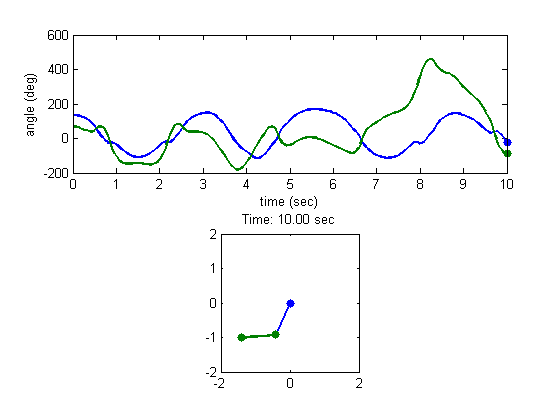
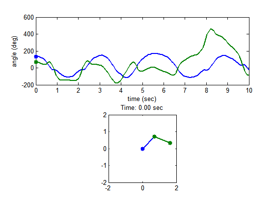

This is an example of how to create animations and animated GIFs in MATLAB®. In this example, we will animate the motion of a double-pendulum. We solve the ordinary differential equation using ode45.
Read about the getframe and imwrite functions in the MATLAB® documentation.
Go to MATLAB Plot Gallery
% Parameters and initial conditions % mass, link length, initial angles, simulation time m = 1; L = 1; theta1 = 3*pi/4; theta2 = 3*pi/8; t = linspace(0, 10, 200); % Solving ODE of a double pendulum [T,Y] = ode45(@(t, x) double_pendulum(t, x, m, L), ... t, [theta1, theta2, 0, 0]); % Calculating joint coordinates for animation purposes x = [ L*sin(Y(:,1)), L*sin(Y(:,1))+L*sin(Y(:,2))]; y = [-L*cos(Y(:,1)), -L*cos(Y(:,1))-L*cos(Y(:,2))]; % Convert radians to degrees ang = Y(:,1:2)*180/pi; % Set up first frame figure('Color', 'white'); subplot(2,1,1); plot(T, ang, 'LineWidth', 2); hh1(1) = line(T(1), ang(1,1), 'Marker', '.', 'MarkerSize', 20, ... 'Color', 'b'); hh1(2) = line(T(1), ang(1,2), 'Marker', '.', 'MarkerSize', 20, ... 'Color', [0 .5 0]); xlabel('time (sec)'); ylabel('angle (deg)'); subplot(2,1,2); hh2 = plot([0, x(1,1);x(1,1), x(1,2)], [0, y(1,1);y(1,1), y(1,2)], ... '.-', 'MarkerSize', 20, 'LineWidth', 2); axis equal axis([-2*L 2*L -2*L 2*L]); ht = title(sprintf('Time: %0.2f sec', T(1))); % Get figure size pos = get(gcf, 'Position'); width = pos(3); height = pos(4); % Preallocate data (for storing frame data) mov = zeros(height, width, 1, length(T), 'uint8'); % Loop through by changing XData and YData for id = 1:length(T) % Update graphics data. This is more efficient than recreating plots. set(hh1(1), 'XData', T(id) , 'YData', ang(id, 1)); set(hh1(2), 'XData', T(id) , 'YData', ang(id, 2)); set(hh2(1), 'XData', [0, x(id, 1)] , 'YData', [0, y(id, 1)]); set(hh2(2), 'XData', x(id, :) , 'YData', y(id, :)); set(ht, 'String', sprintf('Time: %0.2f sec', T(id))); % Get frame as an image f = getframe(gcf); % Create a colormap for the first frame. For the rest of the frames, % use the same colormap if id == 1 [mov(:,:,1,id), map] = rgb2ind(f.cdata, 256, 'nodither'); else mov(:,:,1,id) = rgb2ind(f.cdata, map, 'nodither'); end end % Create animated GIF imwrite(mov, map, 'animation.gif', 'DelayTime', 0, 'LoopCount', inf);
Animated GIF
